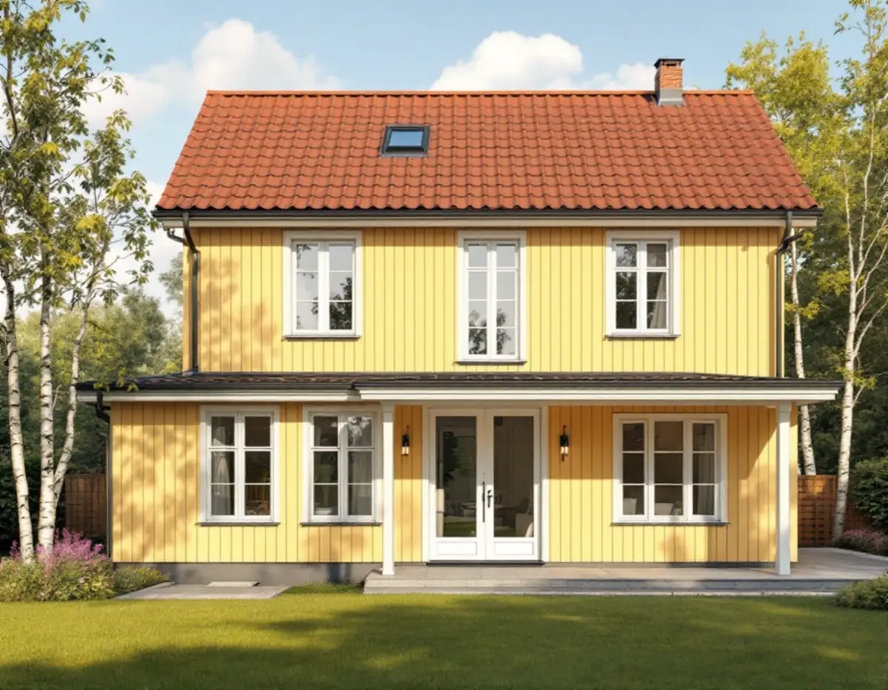
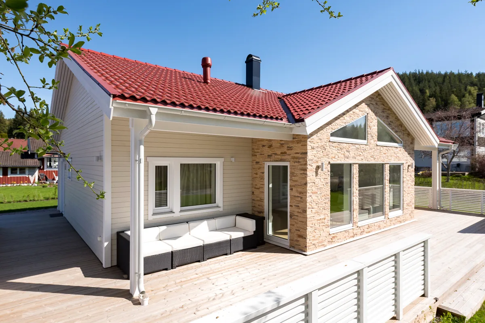
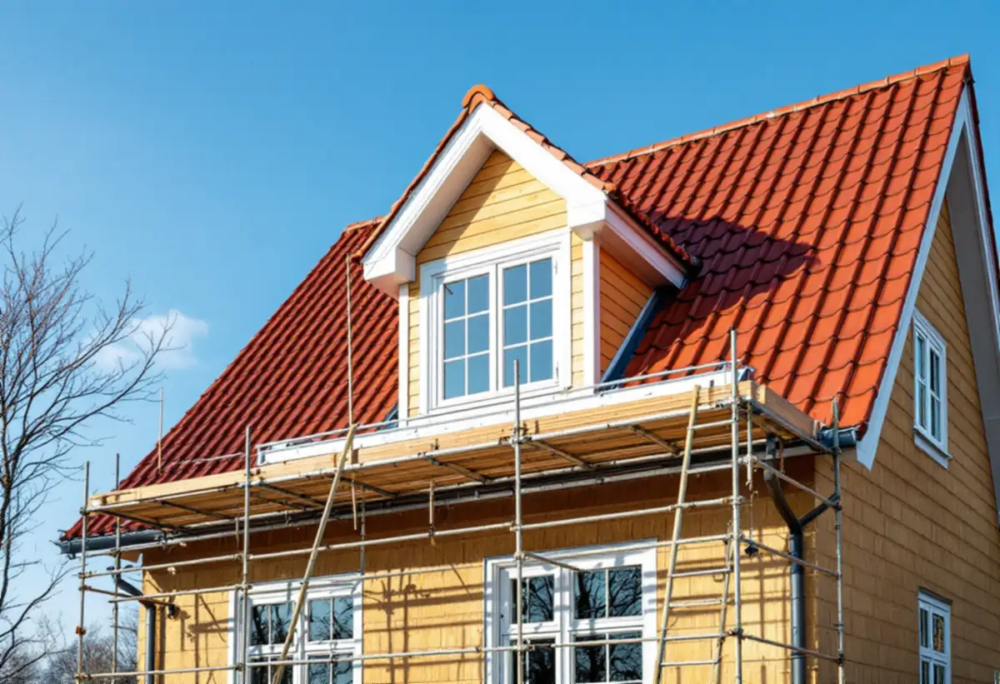

Platsbesök
Gratis besök där vi mäter huset och tidigare tillbyggnader.
Ett uterum, en större takkupa eller ett nytt sovrum på husets baksida – i Botkyrka kan en tillbyggnad vara lovfri eller kräva bygglov beroende på var huset står. Geal Entreprenad AB går igenom kommunens regler och kartan för din tomt och bygger sedan till huset med total entreprenad.

Botkyrka kommun förklarar att en tillbyggnad är en ändring som ökar byggnadens volym, och att det inte spelar någon roll åt vilket håll ökningen sker. Det kan alltså vara en utbyggnad mot trädgården, en påbyggnad på taket eller en större takkupa. Kommunen skriver också att det finns en utvecklad praxis för vad som bedöms som tillbyggnad, där flera faktorer vägs in.
Huvudregeln är att en tillbyggnad kräver bygglov. Men på ett hus som inte är en komplementbyggnad krävs inget lov om tillbyggnaden är högst 30,0 kvadratmeter bruttoarea eller öppenarea och inte går över husets taknock. Tidigare lovfria tillbyggnader på huset – till exempel ett skärmtak eller en attefallstillbyggnad – räknas in i samma 30 kvadratmeter.

Kommunen listar flera lägen där utökad lovplikt gäller: närmare än 30 meter från ett järnvägsspårs mitt, närmare än 4,5 meter från gränsen utan grannarnas medgivande, inom eller intill områden av riksintresse för totalförsvaret och på särskilt värdefulla byggnader eller i särskilt värdefulla områden. För att se vad som gäller hänvisar kommunen till sin webbkarta, med lager för kulturmiljöprogrammet, detaljplaner och riksintressen för kulturmiljövård och totalförsvar.
Vi går igenom lagren för din fastighet innan vi ritar. Kommunen påminner också om att översiktsplanen och eventuella gestaltningsprogram kan peka ut värdefulla miljöer, att strandskydd kan kräva dispens och att åtgärder nära allmän väg utanför detaljplan kan kräva särskilt tillstånd.
Botkyrkas kulturmiljöprogram beskriver hur Tullinge växte till ett villasamhälle sedan järnvägsstationen öppnat 1903, och hur egnahemsområdet Hamra egnahem planlades på 1920-talet söder om järnvägen. Där dominerar kataloghus från 1920- och 1940-talen, bland annat Boros villa Björkhamra. Uttran beskrivs som ett villaområde som byggts från 1910-talet fram till 2010-talet, med nationalromantiska villor, 1920-talsklassicism, funkis och senare hustyper.
Programmets riktlinjer är tydliga: tillbyggnader ska underordnas huvudbyggnaden och få en placering, höjd, volym och utformning som är anpassad till den ursprungliga byggnadens karaktär. För ett kataloghus med symmetrisk fasad betyder det ofta en lägre tillbyggnad på baksidan i stället för en ny volym mot gatan. Programmet säger också att grundstrukturen i gatunät och tomtindelning ska respekteras och att omfattande utfyllnader, stödmurar och hårdgjorda ytor ska undvikas – något att tänka på när en tillbyggnad ska grundläggas på de kuperade tomterna vid Tullingesjön.
Även en lovfri tillbyggnad kan kräva anmälan och startbesked, till exempel när husets bärande delar eller brandskydd påverkas väsentligt eller när ett nytt badrum får vatten och avlopp. Då tar vi fram konstruktionsunderlag och ett förslag till kontrollplan innan arbetet börjar.
Vill du ha ett bindande beslut kan du söka frivilligt bygglov. Kommunen skriver att det ger trygghet inför bygget och minskar risken att åtgärden ifrågasätts senare, men att prövningen kostar en bygglovsavgift. Står det redan ett attefallshus på tomten och funderar du på mer boyta där beskriver vi det under attefallshus i Botkyrka. Allmänt om utbyggnader finns under tillbyggnad.

Gratis besök där vi mäter huset och tidigare tillbyggnader.
Webbkartans lager och detaljplanen kontrolleras för fastigheten.
Förslag som underordnar sig huset, med konstruktionsunderlag.
Bygglov, anmälan eller frivilligt bygglov – efter vad som gäller.
Grund, stomme, tak, anslutning mot huset och invändigt.
Den nya delen används när slutbeskedet har kommit.
Rotavdraget gäller arbetskostnaden, inte material. Skatteverket räknar en tillbyggnad av ett bostadshus som rotarbete om någon av dess sidor sitter ihop med husets yttervägg till minst 75 procent eller om en dörr förbinder de två delarna.
Bostaden ska vara äldre än fem år och större delen av den ursprungliga stommen ska behållas. Där avdraget gäller drar Geal det direkt på fakturan.
Storlek och grundläggning, hur den nya delen ansluter till tak och fasad, om bärande väggar öppnas, våtrum och installationer samt om bygglov och ritningar för en kulturmiljö behövs. Efter ett gratis platsbesök får du ett skriftligt kostnadsförslag.
Mer boyta i samma hus.
Tillbyggnad →Takbyte, takbesiktning och plåtarbeten.
Takläggare i Botkyrka →Tullinge, Uttran och Tumba.
Takrenovering i Botkyrka →Kartlagren, checklistan och vattnet.
Attefallshus i Botkyrka →Flytt av badrum, stammar och frånluft.
Badrumsrenovering i Botkyrka →Nytt hus, utfart och byggarbetsplats.
Byggföretag i Botkyrka →Fönstertyper per epok i Botkyrkas villor.
Fönsterbyte i Botkyrka →Kataloghus, källargolv och trägolv.
Golvläggare i Botkyrka →Kök i villor och radhus, för att bo kvar.
Köksrenovering i Botkyrka →Tidstypiska kulörer från 1960-tal till gamla byar.
Målare i Botkyrka →Rännor, stuprör och plåttak i Botkyrka.
Plåtslagare i Botkyrka →Altan, plank och förråd i villaområdena vid järnvägen.
Snickare i Botkyrka →Material, solpaneler och takkupor.
Takbyte i Botkyrka →Ny tapet på träfiberskivor och gamla lager.
Tapetsering i Botkyrka →Tullingehuset i omgångar.
Totalrenovering i Botkyrka →